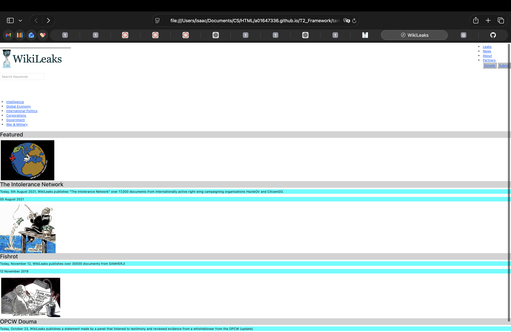
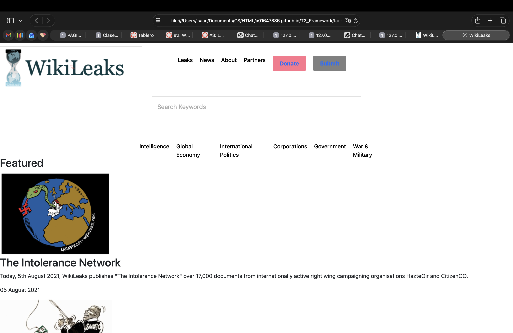

HTML es como la estructura de una página web. Le dice al navegador qué elementos existen, como texto, imágenes o botones. NO sirve para hacerla bonita, solo para darle estructura y orden. Referencia: https://developer.mozilla.org/es/docs/Web/HTML
El head es como el cerebro de la página. Contiene información para el navegador (título, estilos). El body es lo que el usuario ve (texto, imágenes, contenido). Referencia: https://www.w3schools.com/html/html_head.asp
section: agrupa contenido del mismo tema
article: contenido independiente (como una noticia o blog)
aside: información extra (como anuncios o notas)
header: parte superior de una página o sección
footer: parte inferior (créditos, enlaces)
Referencia: https://developer.mozilla.org/es/docs/Web/HTML/Element
| Nombre | Edad |
|---|---|
| Isaac | 19 |
CSS es lo que hace que una página se vea bien (o horrible como esta). Controla colores, tamaños y diseño. Referencia: https://developer.mozilla.org/es/docs/Web/CSS
Separar el diseño de la estructura. HTML = estructura, CSS = apariencia. Referencia: https://www.w3schools.com/css/
1. Inline (dentro de la etiqueta)
2. Interno (dentro de <style>)
3. Externo (archivo .css separado)
Referencia: https://developer.mozilla.org/es/docs/Web/CSS/How_to
Selector: a qué elemento le aplicas estilo (p, .clase, #id)
Regla: el estilo que aplicas (color, tamaño, etc)
Referencia: https://developer.mozilla.org/es/docs/Learn_web_development/Core/Styling_basics/Basic_selectors
Done
Selector de etiqueta: selecciona todas las etiquetas (p, h1)
Selector de clase: usa .clase
Etiqueta + clase: p.clase
Selector de id: usa #id
Referencia: https://developer.mozilla.org/es/docs/Learn_web_development/Core/Styling_basics/Basic_selectors
Una clase se puede repetir varias veces. Un id debe ser único. Referencia: https://developer.mozilla.org/es/docs/Web/CSS/Class_selectors
Todo elemento es una caja: contenido + padding + borde + margen. Referencia: https://developer.mozilla.org/es/docs/Learn/CSS/Building_blocks/The_box_model
Permiten cambiar estilos según el tamaño de la pantalla (responsive). Ejemplo: celular vs laptop. Referencia: https://developer.mozilla.org/es/docs/Web/CSS/Media_Queries
Grid funciona como una tabla flexible para organizar elementos en filas y columnas. Referencia: https://developer.mozilla.org/es/docs/Web/CSS/Guides/Grid_layout
Flexbox organiza elementos en fila o columna y facilita alinearlos. Referencia: https://developer.mozilla.org/es/docs/Web/CSS/Guides/Flexible_box_layout/Basic_concepts
Done
Crear una página con header, contenido y footer usando HTML y aplicarle CSS feo como este

